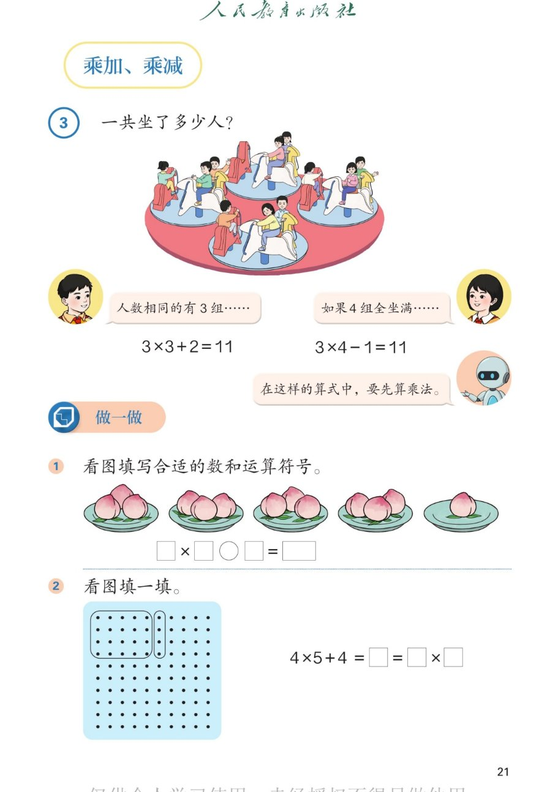

🐟 1~6的表内乘法 · 课本第 21 页 · 乘加 乘减
人教版《数学》二年级上册 · 有声图文带读 · 先想后看解析
题数
6
认知
2
强化
3
拓展
1
本页重点
乘加乘减与先乘后加减
🎧 分两步学：
① 解析教材图片
——纯声音读图，读到哪一块哪一块闪动提示；关键处先倒计时让你思考，再在图片下方给出解析并朗读。
② 分层提问练习
——六道分层题（认知 / 强化 / 拓展），先思考再展开解析、朗读参考答案；这一步不再回到图片。
也可以随时点任意一句话、图上任意一块单独听；点课本文字卡还会展开答案。
教材图片（点块听读，读到哪块哪块闪）

📖 人教版《数学》二年级上册 · 课本第 21 页 · 图片仅供个人学习，版权归人民教育出版社所有
🤔 想一想（点我可跳过）
课本的文字（点句子：听读 + 看答案）
例5 主题图
4 个鱼缸，前 3 个鱼缸每个有 4 条金鱼，第 4 个鱼缸有 1 条金鱼。
看答案 ▾
读图：
4 个鱼缸里，
3 个缸满缸、各 4 条
，
1 个缸只有 1 条
。
例5 问题
一共养了多少条金鱼？
看答案 ▾
目标：
把 4 个缸的金鱼
合起来
，总数用"条"作单位。
方法一
连加：4+4+4+1=13（条）
看答案 ▾
思路：
前 3 缸各 4 条 → 4+4+4；第 4 缸 1 条 → 再 +1。
结果：
4+4+4+1=
13
（条）。
方法二
乘加：4×3+1=13（条）
看答案 ▾
思路：
3 个 4 写成乘法
4×3=12
，再
+1
。
先算乘：
12+1=
13
。这就是"乘加"。
方法三
乘减：4×4-3=13（条）
看答案 ▾
思路：
先假设 4 个缸
都满
，即 4×4=16 条，第 4 缸只 1 条，
少了 3 条
→
-3
。
先算乘：
16-3=
13
。这就是"乘减"。
运算顺序
有乘法又有加、减法，先算乘法，再算加、减法。
看答案 ▾
规则：
乘加、乘减都要
先算乘法
，后算加或减。
比如 4×3+1：先 4×3=12，再 12+1=13；4×4-3：先 16，再 16-3=13。
做一做
看图列式并计算；5×3+2= 5×3-2= 2×4+3= 2×4-3= 3×4-1= 2×5+3=
看答案 ▾
5×3+2：
15+2=
17
；
5×3-2：
15-2=
13
；
2×4+3：
8+3=
11
；
2×4-3：
8-3=
5
；
3×4-1：
12-1=
11
；
2×5+3：
10+3=
13
。
🌈 每题都先算乘法，再算加减
分层提问练习（先想后看解析）
🔢
认知
一共养了多少条金鱼？你会用几种方法列算式？
看解析
🤔 想一想
解析：
连加：
4+4+4+1=
13
乘加：
4×3+1=12+1=
13
乘减：
4×4-3=16-3=
13
💡 三种方法都得到 13，互相检验
🧩
认知
4×3+1 为什么要这样列？每一步表示什么？
看解析
🤔 想一想
解析：
4×3：
前 3 个缸，每个 4 条 →
3 个 4
+1：
第 4 个缸那 1 条单独加上
结果：
12+1=
13
➖
强化
乘减 4×4-3 的道理是什么？为什么"减 3"？
看解析
🤔 想一想
解析：
4×4：
假设 4 个缸
都满
（各 4 条）= 16
-3：
第 4 缸实际 1 条，比 4 条
少 3 条
结果：
16-3=
13
💡 "凑整再减"是乘减的巧办法
⚖️
强化
乘加、乘减算式，先算什么？为什么这样规定？
看解析
🤔 想一想
解析：
顺序：
先乘，后加、减
理由：
乘法是"几个几"，要
先算出一个整体
再合并
例：
4×3+1 → 先 12，再 13；4×4-3 → 先 16，再 13
✏️
强化
做一做计算：5×3±2、2×4±3、3×4-1、2×5+3 各得多少？
看解析
🤔 想一想
解析（先乘后加减）：
5×3+2=
17
；5×3-2=
13
2×4+3=
11
；2×4-3=
5
3×4-1=
11
；2×5+3=
13
🌈
拓展
举一个生活中的"乘加"或"乘减"问题，并列出算式。
看解析
🤔 想一想
解析（开放题）：
乘加例子：
3 盒铅笔每盒 4 支，又多 1 支 → 3×4+1=
13
支。
乘减例子：
4 排椅子每排 5 把，少 2 把 → 4×5-2=
18
把。
🌈 只要"几个几 + 多几个"或"几个几 - 少几个"都算对
① 解析教材图片
② 分层提问练习
⏹ 停止
纯声音 + 高亮跟随 · 想好才出解析
← 返回导航